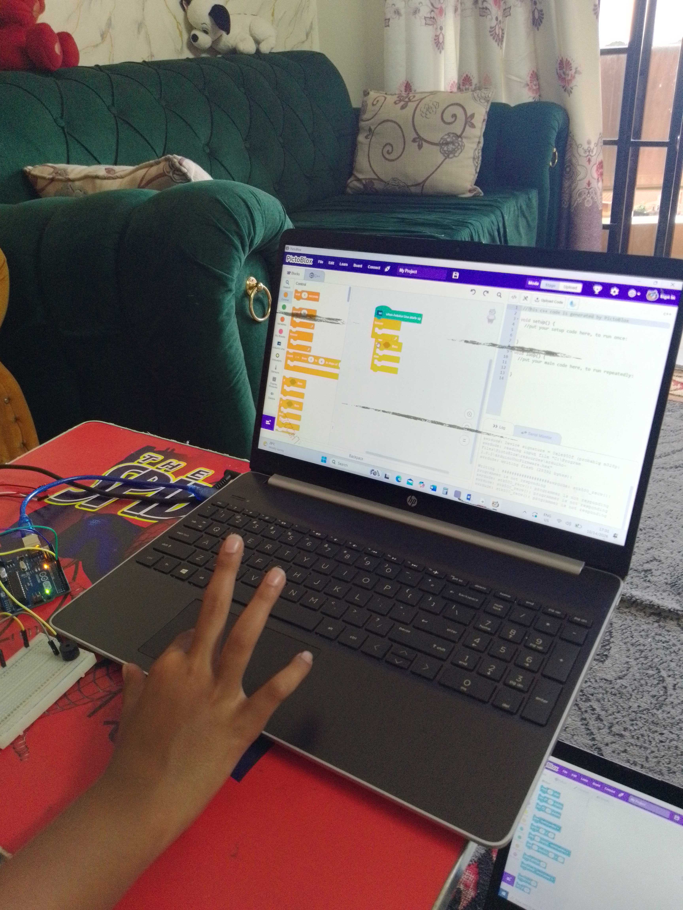
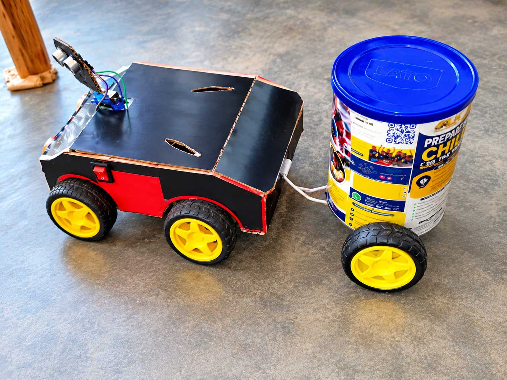

Robotics and Arduino
Explore how robots and electronic systems work, then practise assembling and programming projects at a suitable level.
Practical learning, shaped around your child
Give your child the opportunity to understand how technology works, develop creative thinking, and build practical solutions through personalized STEM learning with Robotics Learning Hub.
A learning plan for the learner
For children and young people aged 5–18+, with practical STEM learning tailored to each learner's previous experience, interests, and goals.
Families can share what their child is curious about and RLH will discuss a suitable starting point and learning plan.
Fees from UGX 30,000

What your child can explore
Explore how robots and electronic systems work, then practise assembling and programming projects at a suitable level.
Develop logic and computational thinking through creative coding and age-appropriate introductions to AI concepts.
Learn about circuits, components and sensors by connecting them to practical activities and experiments.
Plan, build, test, debug and improve projects that connect design ideas with real-world problem solving.
Practical outcomes
Projects give learners a chance to put ideas into practice and demonstrate what they understand.
Activities may involve robotics, circuits, coding, sensors or creative engineering. The learning is progressive and adapted to the learner; every learner's projects depend on their interests, starting point, available materials and learning plan.
Families can ask RLH what equipment is provided and whether anything needs to be supplied for the selected program.

Learn by building real life projects.
A clear first step
Share your child's age, interests, experience and location.
Discuss your goals, preferred arrangement, schedule and suitable learning plan.
RLH confirms availability, fees, location coverage, equipment arrangements and a proposed start date.
The learner works through hands-on activities with feedback and chances to demonstrate their understanding.
Learning arrangements
Contact RLH to confirm your location, available days and the most suitable option.
Subject to location coverage and scheduling. Please ask RLH to confirm whether your area can be served.
May be arranged subject to availability and a discussion of the learner's goals.
Families may ask about small-group arrangements, subject to availability.
Learning at the RLH centre in Mpererwe along Gayaza Road may be available. Confirm arrangements with RLH.
Planning your enquiry
Home Coaching fees start from UGX 30,000. Sessions are 1–2 hours; the suitable duration, frequency, and any travel arrangements depend on the learner's needs, preferred format, location, and availability. Contact RLH for more information and to confirm the details for your enquiry.
Equipment needs can vary with the selected learning plan. Ask RLH what will be provided and whether your family needs to supply a device, kit or other materials.
Frequently asked questions
No prior experience is required for an enquiry. RLH will discuss your child's experience and recommend a suitable starting point.
Home STEM Coaching is for learners aged 5–18+ years. RLH will discuss a suitable starting point based on your child's experience and interests.
Home visits depend on location coverage and scheduling. RLH will confirm whether your area can be served.
One-on-one arrangements may be possible subject to availability. Ask RLH during the enquiry.
Ask about a small-group arrangement. Suitability and availability depend on the learners and schedule.
Equipment depends on the selected program. RLH will clarify what is provided and whether your family needs to supply anything.
Sessions are 1–2 hours. RLH will discuss suitable frequency and scheduling during your enquiry.
Fees start from UGX 30,000. Contact RLH for more information and to confirm the fee for your preferred arrangement.
Home visits depend on location and scheduling. Contact RLH to check your area.
Send an enquiry with your child's age, interests and location. RLH will discuss available arrangements; a booking is confirmed only after RLH confirms availability and details.
Start a conversation
Share a few details about your child and let RLH help you identify a suitable learning arrangement.
Opening WhatsApp lets you review and send your enquiry to RLH. You can also use the Contact page.